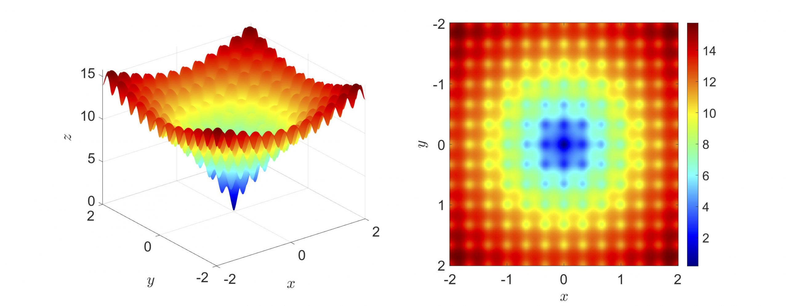

Taxi
Multi-objective predictive taxi dispatch via network flow optimization. Beomjun Kim, Jeongho Kim, Subin Huh, Seungil You, and Insoon Yang. IEEE Access, vol. 8, pp. 21437-21452, 2020.
A3DQN
A3DQN: Adaptive Anderson acceleration for deep Q-networks. Melike Ermis, and Insoon Yang. Proceedings of the 2020 IEEE Symposium on Adaptive Dynamic Programming and Reinforcement Learning (ADPRL), pp. 250-257, 2020.
CDC2020_2
Minimax control of ambiguous linear stochastic systems using the Wasserstein metric. Kihyun Kim, and Insoon Yang. Proceedings of the 59thIEEE Conference on Decision and Control (CDC), pp. 1777-1784, 2020.
CDC2020_1
A stochastic consensus method for nonconvex optimization on the Stiefel manifold. Jeongho Kim, Myeongju Kang, Dohyun Kim, Seung-Yeal Ha , and Insoon Yang. Proceedings of the 59thIEEE Conference on Decision and Control (CDC), pp. 1050-1057, 2020.

CDC (2 papers): Wasserstein minimax control of ambiguous linear stochastic systems & Nonconvex optimization on the Stiefel manifold
The papers “ Minimax Control of Ambiguous Linear Stochastic Systems Using the Wasserstein Metric “, and “A Stochastic Consensus Method for Nonconvex Optimization on the Stiefel Manifold” have been accepted to the IEEE Conference on Decision ...